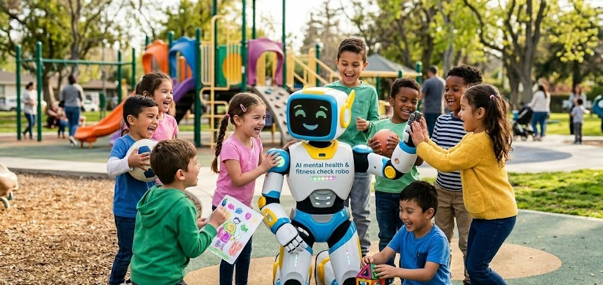
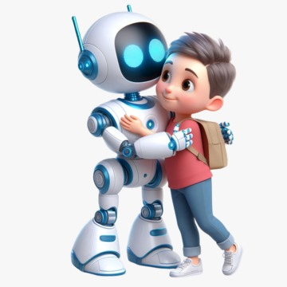
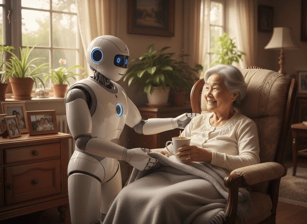

Gallery

Compassionate Companionship
A humanoid robot reading to an elder, showing AI-powered empathy.

AI Caregiver Support
Robots assisting in daily tasks for improved wellbeing.

Playground Interaction
Children engaging with a friendly AI robot in a park setting.

Human-Robot Bond
A child hugging a humanoid robot, symbolizing trust and companionship.
AI in Education
A robot presenting in a classroom, integrating AI into learning.
AI in Business
Robots supporting decision-making in advanced corporate environments.
Knowledge & AI
AI technology blending with traditional libraries for global innovation.
Professional Collaboration
AI assisting teams in modern office meetings.

AI Healthcare Support
Robots providing compassionate care for patients.
© 2026 AI Mental Health & Fitness Check Robo | Built with